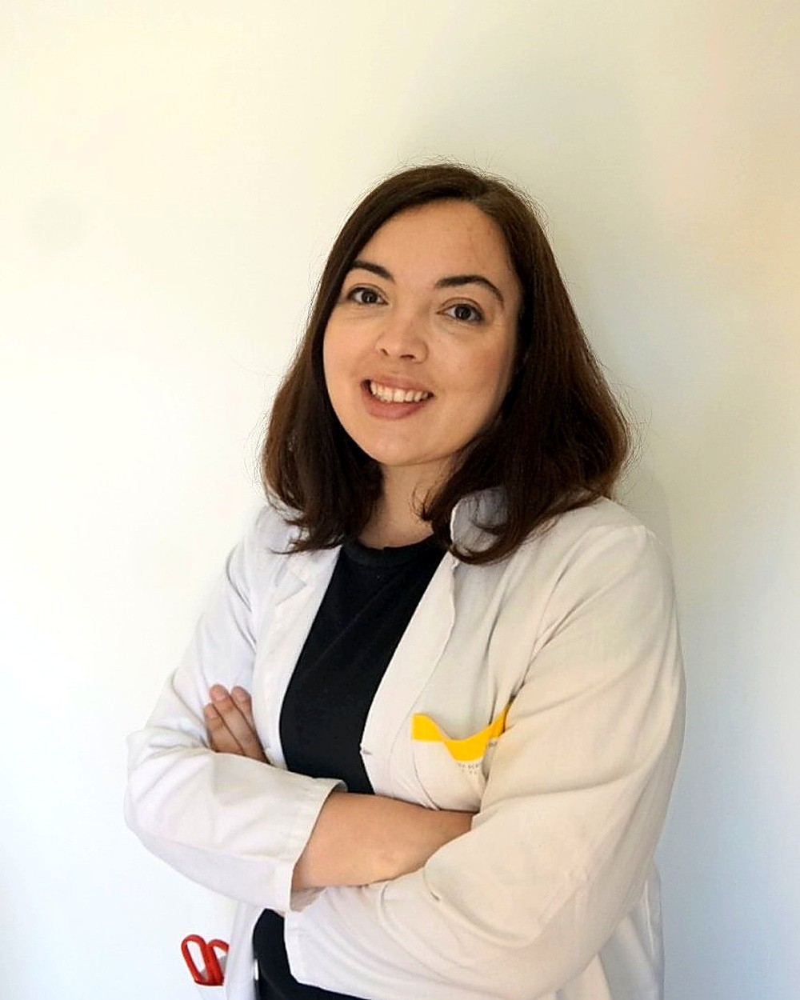

Médica · Desarrolladora · Investigadora
Dra. Laura Bernal
Mi perfil nace de una combinación poco habitual: práctica clínica asistencial, investigación biomédica y desarrollo tecnológico.
Esa experiencia clínica, en entornos reales de presión, incertidumbre y toma de decisiones complejas, es la base de todo lo que construyo.
Soy médica con doble titulación universitaria, Licenciatura en Medicina y Grado en Ciencias Biomédicas, y dos especialidades clínicas: Medicina Familiar y Comunitaria y Medicina de Urgencias y Emergencias. Además, desarrollo una línea de trabajo propia en programación e IA aplicada a la clínica.
Trayectoria profesional
Desde 2014,
en consulta
Actualmente en atención primaria, tras una etapa previa en urgencias hospitalarias de un centro de referencia regional.
Desarrolladora IA clínica
Proyectos propios
Desarrollo de herramientas clínicas propias combinando 12 años de práctica médica real con programación full-stack e inteligencia artificial.
Plataforma de gestión de pacientes crónicos, sistema de apoyo a la decisión terapéutica (CDSS) con la API oficial de la AEMPS y motor de diagnóstico diferencial basado en IA.
Stack: React.js · Node.js · Python · MongoDB · PostgreSQL · Supabase · OpenAI API · MCP
Formadora en IA, programación y bioinformática
Independiente
Formación práctica en inteligencia artificial, programación y bioinformática dirigida a médicos y profesionales sanitarios, en niveles básico y avanzado. Todo lo que se enseña se puede aplicar el lunes siguiente en consulta.
Docente en el Programa UPRO de Formación en Competencias Digitales para Médicos (Generación D de Red.es, Next Generation EU), con la participación de la Organización Médica Colegial.
Médica de familia
Servicio Murciano de Salud
Médica de familia en activo en el sistema público con más de 12 años de práctica clínica continuada. Conozco los flujos reales de la consulta, los cuellos de botella del sistema y los problemas que merecen ser resueltos.
Docente clínica
Unidad Docente AFyC Murcia / Universidad de Murcia
Colaboradora clínica en la formación de residentes MIR y profesora colaboradora de prácticas clínicas para estudiantes de Medicina.
Medicina estética y de precisión
Clínica Dra. Laura Bernal · Murcia
Clínica propia con enfoque en medicina estética y medicina de precisión, integrando el perfil genético del paciente en la planificación del tratamiento.
Urgencias hospitalarias
H. U. Virgen de la Arrixaca
Urgencias hospitalarias de alta complejidad. Especialista en Medicina de Urgencias y Emergencias, título oficial obtenido en febrero de 2026.
Formación académica
Dos titulaciones, dos especialidades
- Licenciatura en MedicinaUniversitat de Lleida2013
- Especialista en Medicina Familiar y ComunitariaMinisterio de Sanidad · Vía MIR2018
- Grado en Ciencias BiomédicasUniversitat de Lleida2019
- Máster en Medicina de Urgencias y EmergenciasUniversidad Miguel Hernández2019
- Máster en Medicina Estética, Nutrición y AntienvejecimientoUDIMA2019
- Máster Universitario en Nutrición y SaludUniversidad Internacional Valenciana (VIU)2020
- Especialista en Medicina de Urgencias y EmergenciasMinisterio de Sanidad2026
Colaboraciones y grupos de trabajo
Grupo de Trabajo de Genética
SEMERGEN · Sociedad Española de Médicos de Atención Primaria
¿Hablamos?
Estoy abierta a colaboraciones en formación, consultoría o desarrollo de soluciones digitales para el ámbito sanitario.
Contacta conmigo